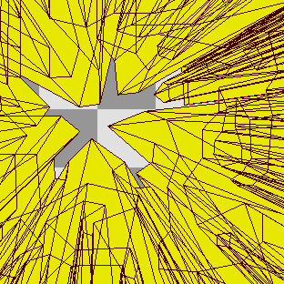
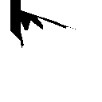
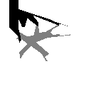
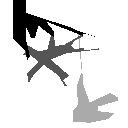
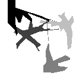
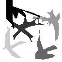
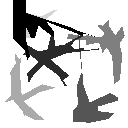

Projection Vertex Shader
```glsl // Dispatch with GL_TRIANGLES with `9 * numLines` vertices. uint vertexIdToShadowVertexId(uint idx) { // 0-----1 // | \ | // 4 __\ 2 // \ / // 3 // 0 1 2 => 0, 1, 2 // 3 4 5 => 2, 3, 4 // 6 7 8 => 2, 4, 0 switch(idx) { case 0u: case 8u: return 0u; case 1u: return 1u; case 2u: case 3u: case 6u: return 2u; case 4u: return 3u; default: // 5, 7 return 4u; } } // Extends a line out into a 5-gon // // 0-----1 // | | // 4 2 // \ / // 3 // // https://www.geogebra.org/calculator/gjz8fexq vec2 getShadowCoord(vec2 P, vec2 A, vec2 B, uint shadowVertexId) { if(shadowVertexId == 0u) return A; if(shadowVertexId == 1u) return B; vec2 PB = B - P; float BInterval = max(0., max( ((PB.x >= 0. ? 1. : -1.) - B.x) / PB.x, ((PB.y >= 0. ? 1. : -1.) - B.y) / PB.y )); vec2 projectedB = B + BInterval * PB; if(shadowVertexId == 2u) return projectedB; vec2 PA = A - P; float AInterval = max(0., max( ((PA.x >= 0. ? 1. : -1.) - A.x) / PA.x, ((PA.y >= 0. ? 1. : -1.) - A.y) / PA.y )); vec2 projectedA = A + AInterval * PA; if(shadowVertexId == 4u) return projectedA; // // shadowVertexId == 3u // // vec2 halfVector = normalize(normalize(PA) + normalize(PB)); // vec2 halfVector = normalize(PA * length(PB) + PB * length(PA)); vec2 halfVector = (PA * length(PB) + PB * length(PA)); vec2 axBy = vec2(projectedA.x, projectedB.y); vec2 bxAy = vec2(projectedB.x, projectedA.y); if(dot(halfVector, axBy - P) <= 0.) { axBy = vec2(0.); } if(dot(halfVector, bxAy - P) <= 0.) { bxAy = vec2(0.); } vec2 connectionXBias = (abs(axBy.x) > abs(bxAy.x)) ? axBy : bxAy; vec2 connectionYBias = (abs(axBy.y) > abs(bxAy.y)) ? axBy : bxAy; vec2 connectionPoint = (abs(connectionXBias.x) > abs(connectionYBias.y)) ? connectionXBias : connectionYBias; return connectionPoint; } void main() { // NB: The lines and player position are expected to already // be transformed into NDC space, any kind of scaling or // transformation would be expected to be done beforehand. uint lineIndex = gl_VertexID / 9u; vec4 line = getLine(lineIndex); // read line from a texture vec2 playerPosition = getPlayerPosition(); // read from a uniform vec2 NDC = getShadowCoord(playerPosition, line.xy, line.zw, vertexIdToShadowVertexId(gl_VertexID % 9u)); gl_Position = vec4(NDC, 0., 1.); } ```
Projected Triangles
Projected Triangles
Resulting Mask

Player #1 Shadow
Player #1 Shadow

Player #2 Shadow
Player #2 Shadow

Player #3 Shadow
Player #3 Shadow

Player #4 Shadow
Player #4 Shadow

Player #5 Shadow
Player #5 Shadow

Player #6 Shadow
Player #6 Shadow
Example GL code
```c glClear(GL_COLOR_BUFFER_BIT | GL_DEPTH_BUFFER_BIT | GL_STENCIL_BUFFER_BIT); // Only enable stencil evaluation glEnable(GL_STENCIL_TEST); glDisable(GL_DEPTH_TEST); glStencilMask(0xFF); glColorMask(GL_FALSE, GL_FALSE, GL_FALSE, GL_FALSE); glUseProgram(drawSharedVisionPipeline); glBindTextureUnit(0, linesTexture); int numTriangleElements = numLines * 9; if(sharedVision) { // On stencil/depth fail keep the existing stencil value, but on pass increment it. glStencilOp(GL_KEEP, GL_KEEP, GL_INCR); for(int i = 0; i < numPlayers; ++i) { // Only accept pixels which were previously covered, but also don't // accept pixels a previous triangle may have covered. glStencilFunc(GL_EQUAL, i, 0xFF); glUniform2f(0, playerPositions[i].x, playerPositions[i].y); glDrawArrays(GL_TRIANGLES, 0, numTriangleElements); } } else { // Simple raster inplace glStencilOp(GL_REPLACE, GL_REPLACE, GL_REPLACE); glStencilFunc(GL_ALWAYS, 1, 0xFF); glUniform2f(0, playerPositions[playerId].x, playerPositions[playerId].y); glDrawArrays(GL_TRIANGLES, 0, numTriangleElements); } // Re-enable normal depth features and fail the stencil test // for totally occluded pixels. glEnable(GL_DEPTH_TEST); glStencilFunc(GL_NOTEQUAL, sharedVision ? numPlayers : 1, 0xFF); glColorMask(GL_TRUE, GL_TRUE, GL_TRUE, GL_TRUE); ```Updated GL code
```c glClear(GL_COLOR_BUFFER_BIT | GL_DEPTH_BUFFER_BIT | GL_STENCIL_BUFFER_BIT); glDisable(GL_DEPTH_TEST); glColorMask(GL_FALSE, GL_FALSE, GL_FALSE, GL_FALSE); glUseProgram(drawSharedVisionPipeline); glBindTextureUnit(0, linesTexture); int numTriangleElements = numLines * 9; if(sharedVision) { glEnable(GL_STENCIL_TEST); glStencilMask(0xFF); // On stencil/depth fail keep the existing stencil value, but on pass increment it. glStencilOp(GL_KEEP, GL_KEEP, GL_INCR); for(int i = 0; i < numPlayers; ++i) { // Enable writing to depth on the final player if(i == (numPlayers - 1)) { glEnable(GL_DEPTH_TEST); glDepthFunc(GL_ALWAYS); } // Only accept pixels which were previously covered, but also don't // accept pixels a previous triangle may have covered. glStencilFunc(GL_EQUAL, i, 0xFF); glUniform2f(0, playerPositions[i].x, playerPositions[i].y); glDrawArrays(GL_TRIANGLES, 0, numTriangleElements); } // Clear the stencil (presuming other passes want it). glClear(GL_STENCIL_BUFFER_BIT); } else { // Simple raster inplace, don't even touch the stencil glDisable(GL_STENCIL_TEST); glUniform2f(0, playerPositions[playerId].x, playerPositions[playerId].y); glDrawArrays(GL_TRIANGLES, 0, numTriangleElements); glEnable(GL_STENCIL_TEST); } // Restore the states for whatever comes after! glEnable(GL_DEPTH_TEST); glDepthFunc(GL_LESS); glColorMask(GL_TRUE, GL_TRUE, GL_TRUE, GL_TRUE); ```Example GL code
```c // Only enable stencil evaluation glEnable(GL_STENCIL_TEST); glDisable(GL_DEPTH_TEST); glColorMask(GL_FALSE, GL_FALSE, GL_FALSE, GL_FALSE); glStencilOp(GL_REPLACE, GL_REPLACE, GL_REPLACE); glUseProgram(drawSharedVisionPipeline); glBindTextureUnit(0, linesTexture); int numTriangleElements = numLines * 9; // Render each players occlusion into their own seperate bit for(int i = 0; i < numPlayers; ++i) { int mask = 1 << i; glStencilFunc(GL_ALWAYS, mask, mask); glStencilMask(mask); glUniform2f(0, playerPositions[i].x, playerPositions[i].y); glDrawArrays(GL_TRIANGLES, 0, numTriangleElements); } // Restore depth / colour state and prevent writing // into the stencil buffer. glEnable(GL_DEPTH_TEST); glStencilMask(0xFF); glStencilOp(GL_KEEP, GL_KEEP, GL_KEEP); glColorMask(GL_TRUE, GL_TRUE, GL_TRUE, GL_TRUE); // If you want to filter for any shared visible pixel int anyVisibleMask = (1 << numPlayers) - 1; glStencilFunc(GL_NOTEQUAL, anyVisibleMask, anyVisibleMask); // If you want to filter for one or more specific players int specificVisibleMask = (1 << playerIdFirst) | (1 << playerIdSecond) | ...; glStencilFunc(GL_NOTEQUAL, specificVisibleMask, specificVisibleMask); ```Resolution
Draw selection overlay
Draw lines
Enable players
Display type